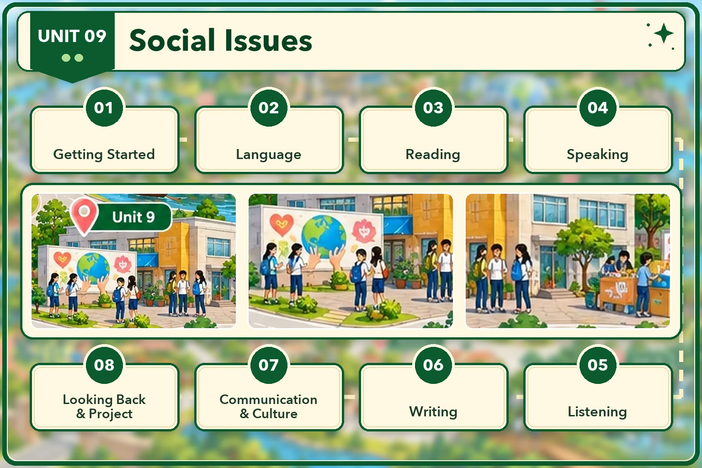

Lesson 1 · Getting started — A social awareness club meeting Lesson 2 · Language Lesson 3 · Reading: Peer pressure Lesson 4 · Speaking: Responding to peer pressure Lesson 5 · Listening: Types of bullying Lesson 6 · Writing: A proposal for a campaign against cyberbullying Lesson 7 · Communication and Culture / CLIL: Social problems facing teens in the US Lesson 8 · Looking back and Project: An awareness campaign about a social issueĐã dựng: Lesson 1, 2, 3, 4, 5, 6, 7, 8. Đủ cả 8 tiết. Dựng xong tiết nào thì mở khoá thẻ đó.